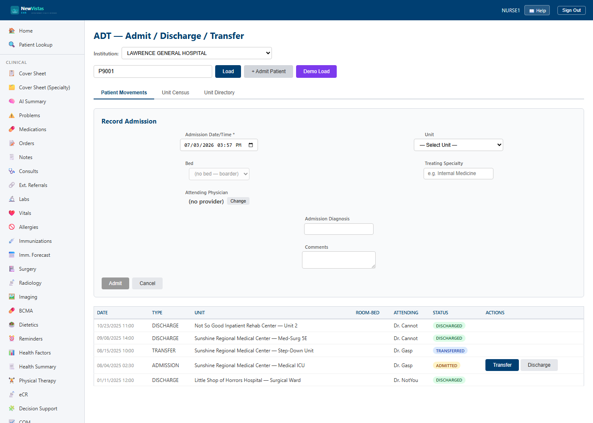

Manual › Administrator › ADT
ADT — Admit / Discharge / Transfer
ADT tracks a patient's movements through the facility — admission to a unit, transfer between units, and discharge — and gives you a live per-unit census and a directory of all units. It's the equivalent of VistA's ADT (PIMS) movement tracking. Admission places the patient into a real bed (or as a unit "boarder"); the bed's occupancy is owned by the Bed Board, so ADT and the board never disagree.
Open ADT and load a patient
- In the sidebar, under Administrative, click ADT (or go to
/adt). - Confirm the Institution picker at the top — it defaults to your acting institution (e.g.
NEW VISTAS MEDICAL CENTER). All units and beds below are scoped to it. - In the Patient ID field, type the patient ID (e.g.
P9001). - Click Load (or press Enter) to list that patient's movements.

The three tabs
Across the top, three tabs switch between the views:
- Patient Movements — every admit, transfer, and discharge for the loaded patient, with their status.
- Unit Census — who is currently on a unit you pick (beds and boarders).
- Unit Directory — the list of all units in the institution, each with live capacity counts (Total / Available / Occupied / Dirty / Blocked-OOS / Boarders).
Admit a patient
- Load the patient, then click + Admit Patient to open the admission form.
- Set the Admission Date/Time (required).
- Pick the Unit from the dropdown — each option shows the unit name and how many beds are available (e.g.
Medical Ward 3A — 10 available). - Pick the Bed from the dropdown of that unit's available beds. Choose (no bed — boarder) when the patient is admitted to the unit but not yet placed in a specific bed (ED boarding, or a site that doesn't track individual beds).
- Optionally add treating specialty, attending physician, admission diagnosis, and comments.
- Click Admit. The new movement appears in the table with an ADMITTED badge, and the chosen bed becomes Occupied on the Bed Board.
No free-text beds
You pick a unit and a real bed, never type a room-bed string. That's what
keeps the census and the Bed Board honest — a patient is either in a known
bed or an explicit boarder, and the bed can't be double-booked.
Color = status
Movement status badges follow the system-wide scheme: amber for
ADMITTED (in-house), blue for TRANSFERRED,
and green for DISCHARGED.
Transfer or discharge
Each row that is currently ADMITTED shows two actions in the last column:
- Click Transfer to open the transfer form, choose the destination Unit and Bed (same unit + bed = an in-unit bed swap), optionally update specialty/attending, then click Transfer. The old bed goes to Dirty for turnover.
- Click Discharge to record a regular discharge as of now. The bed is released to Dirty (never straight to Available).
Moving a patient to another hospital?
Intra-facility moves happen here. To place a patient in a different
institution in the health system, use the
Transfer Center — the receiving facility
reserves one of its own beds and confirms the arrival.
Unit Census
- Click the Unit Census tab.
- Pick a unit from the Select Unit dropdown.
- The table lists everyone currently on that unit — bed (or boarder), room, patient, admit date, specialty, attending, nurse, and acuity.
Tip
Need to seed a movement history quickly for a demo? Load a patient and
click Demo Load — it records a sample admission (to MED-3A bed
301-A) and a transfer (to ICU-1 bed ICU-5) so the tabs have data to show.